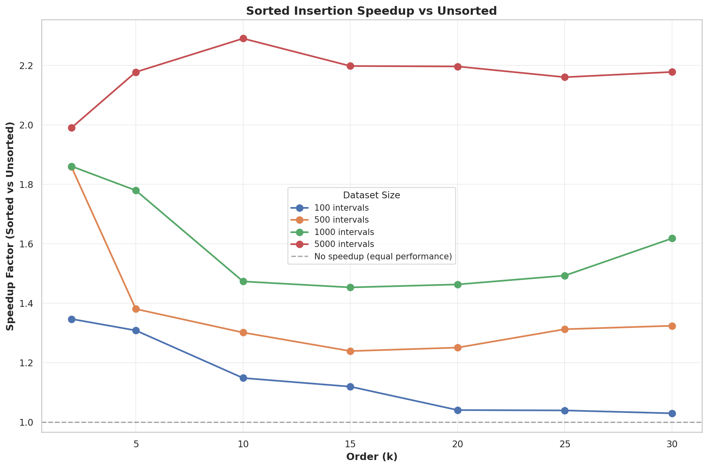
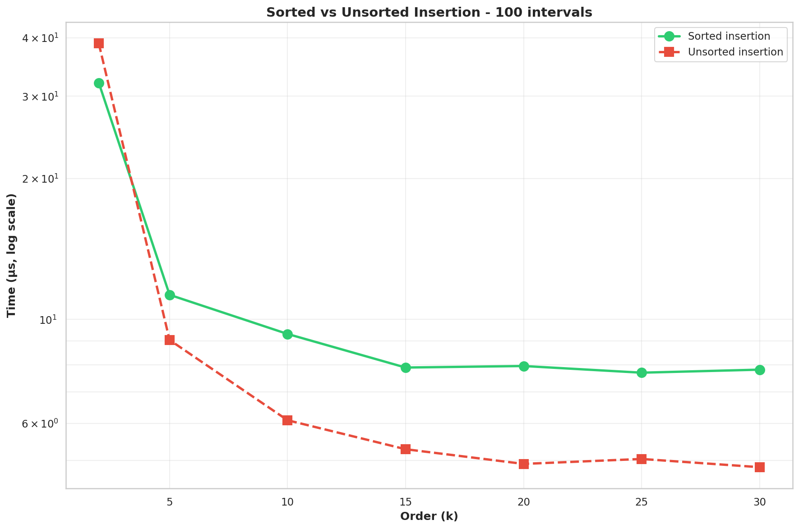
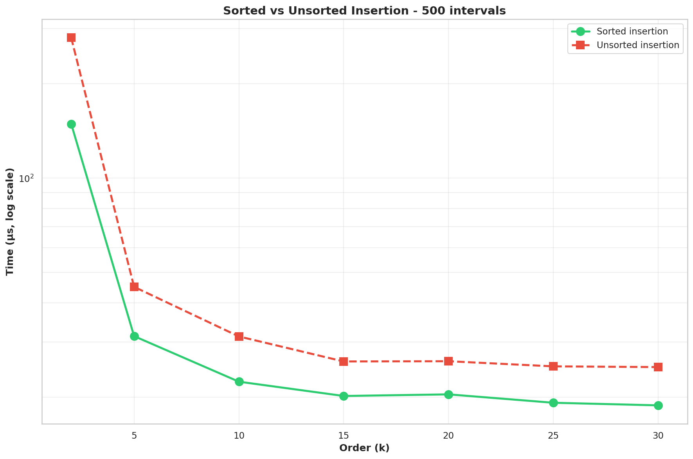
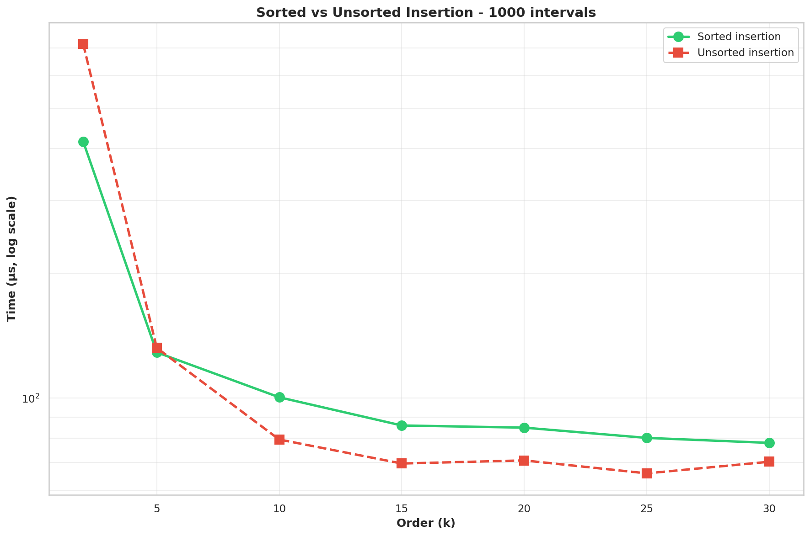
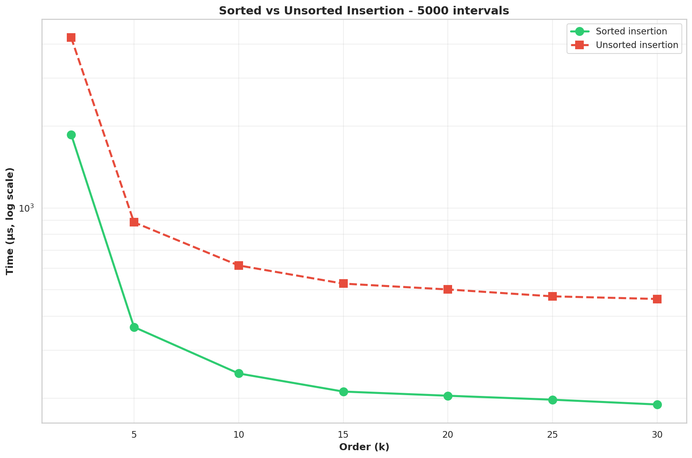

Overview: These visualizations compare the performance of the genogrove B+ tree
implementation across different order values (node capacity parameter). Each plot provides
a different perspective on how the order affects performance.
Tested configurations:
- Orders: 2, 5, 10, 15, 20, 25, 30
- Dataset sizes: 100, 500, 1000, 5000 intervals
- Insertion modes: Sorted and unsorted
Plot types:
- Time vs Order: Shows how execution time changes with different order values
for each dataset size. Lower is better.
- Time vs Size: Shows how execution time scales with dataset size, with
separate lines for each order value. Helps identify optimal order for different scales.
- Throughput: Measures items processed per second. Higher is better.
- Speedup Factor: Shows relative performance compared to baseline order (order=2).
Values > 1 indicate improvement.
📊 View historical benchmark trends (time-series data)
Sorted Insertion Speedup

Direct Comparison - 100 intervals

Direct Comparison - 500 intervals

Direct Comparison - 1000 intervals

Direct Comparison - 5000 intervals
